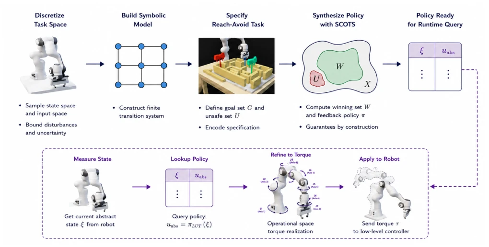
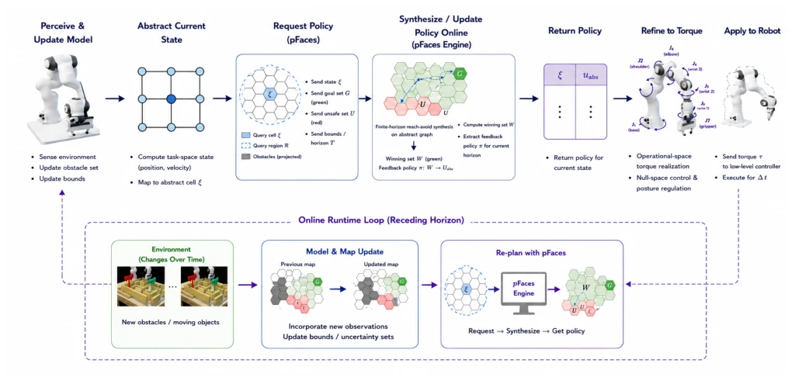
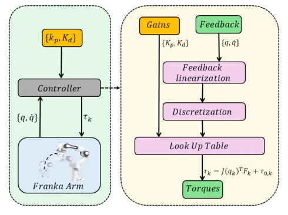
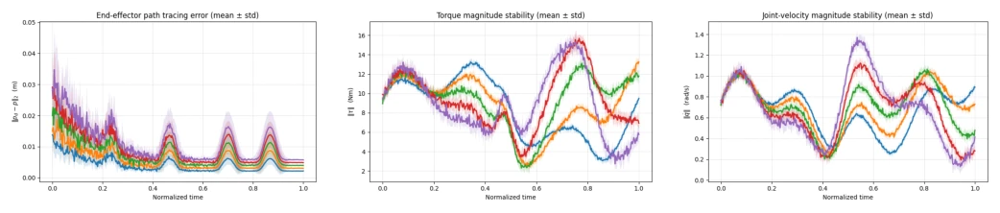
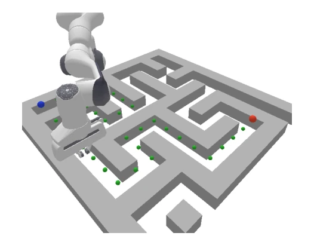
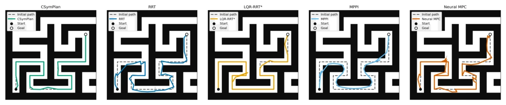
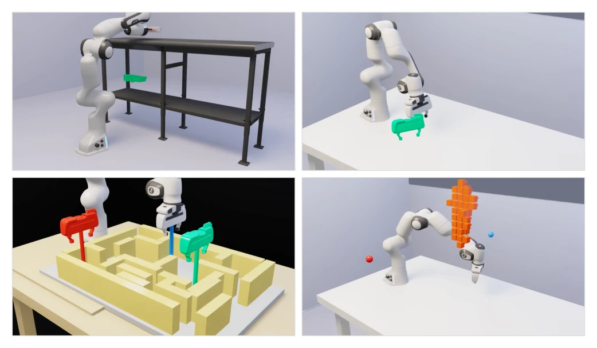
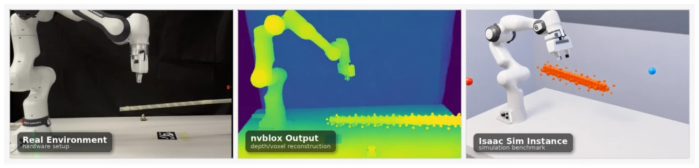

This paper attempts to equip robotic arms with a "safety seatbelt" using formal methods. The core of CSymPlan is "Certified Symbolic Planning," which sounds sophisticated, essentially simplifying high-dimensional robotic arm dynamics to a double integrator model in operational space, followed by symbolic control synthesis on discrete grids. The advantage is theoretically guaranteeing zero violation of "reachability-obstacle avoidance," which is very beneficial in safety-critical scenarios; the disadvantages are high computational overhead, time-consuming offline construction, online dependency on pFaces parallel acceleration, and only certifying end-effector position, ignoring whole-arm collision. For industrial scenarios pursuing extreme efficiency, this solution might be like installing an anti-lock braking system on an F1 racing car—safe but bulky. However, successfully running hardware on the Franka FR3 indeed proves the possibility of combining closed-loop control with formal verification, at least more reliable than those "hit-or-miss" reinforcement learning methods.
Existing robotic arm control architectures typically decouple planning and control: high-level planning geometric paths, low-level controllers tracking. This separation is prone to failure during dynamic execution, because collision-free paths planned may become dangerous due to execution errors, model mismatch, or actuator saturation [1, 4]. Although kinematic planning (such as RRT) and dynamic planning (such as MPC) consider partial dynamics, most rely on local optimization or sampling and cannot provide closed-loop "reachability-obstacle avoidance" formal guarantees [11-14]. Methods such as reinforcement learning lack verifiable safety certificates
Figure 1. Overview of CSymPlan. The offline implementation synthesizes a certified reach-avoid policy from a finite abstraction of sampled perturbed task-space dynamics and executes it through a quantization–lookup–torque pipeline. The online implementation uses the same abstraction and torque-realization interface, but calls pFaces online mode at runtime to synthesize or refresh the symbolic policy for the current target and obstacle sets.

Figure 2. Offline CSymPlan architecture. The upper row shows the one-time synthesis pipeline: task-space discretization, finite symbolic model construction, reach-avoid task specification, SCOTS-based policy synthesis, and export of a policy table for runtime query. The lower row shows the real-time execution pipeline: the robot state is measured and quantized, the precomputed policy is queried, the selected abstract input is refined through operational-space torque realization, and the resulting torque command is applied to the robot.

Figure 3. Online CSymPlan architecture. At each replanning instant, the robot senses the environment, updates the obstacle model and uncertainty bounds, maps the measured task-space state to an abstract cell, and sends the current state, target set, unsafe set, and horizon to the pFaces server. pFaces performs finite-horizon reach-avoid synthesis over the symbolic abstraction, returns a certified policy or command segment for the current state, and the robot refines the selected abstract input through operational-space torque realization. The lower loop illustrates the receding-horizon update: changes in the environment trigger map updates, new pFaces requests, and replacement of stale command segments.

Figure 4. Offline real-time execution architecture on the Franka FR3. Joint feedback is converted to task-space position and velocity, quantized, queried through the precomputed symbolic policy, and refined to joint torques at the control rate.
Figure 5. Offline hardware experiment procedure and control-loop execution order.

Figure 6. Offline Franka FR3 real-robot execution metrics across hardware trials. The panels show (a) end-effector position tracking error, (b) commanded joint-torque norm, and (c) measured joint-velocity norm. Curves show the mean and one-standard-deviation band over N = 5 trials per scene.

Figure 7. Representative offline simulation scene. The robot starts at the blue marker and aims to reach the red marker. Green markers indicate a trajectory produced by CSymPlan through the certified safe set.

Figure 8. Representative maze trajectories for offline CSymPlan and baselines. Dashed curves show reference paths where applicable and solid curves show executed end-effector trajectories from the same start to the same goal. Black regions are obstacles; a collision is counted when the end-effector footprint intersects an obstacle cell.

Figure 9. Representative Isaac Sim benchmark environments used for online evaluation: shelf/rack reach-avoid, point reach, 3D maze, and moving-obstacle under tasks.

Figure 10. Real-world online perception and simulation correspondence. Left: Franka FR3 hardware setup used for the online reach-avoid experiments. Middle: DNVblox voxel reconstruction obtained from depth sensing and used to form the runtime obstacle set. Right: corresponding Isaac Sim scene used for controlled online benchmarking.